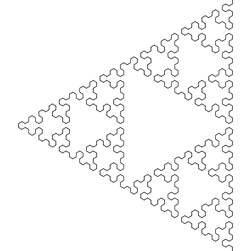
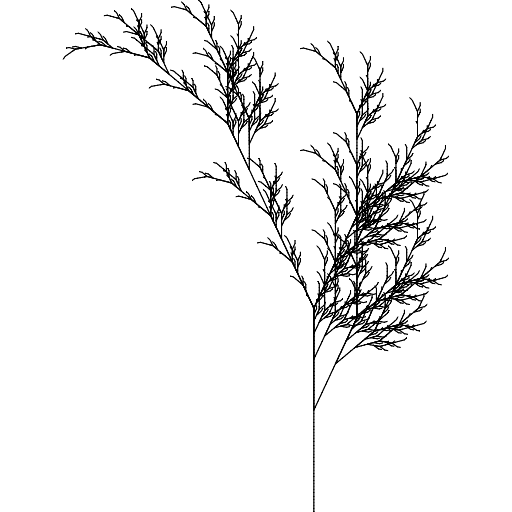
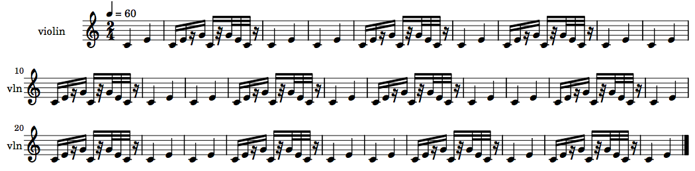
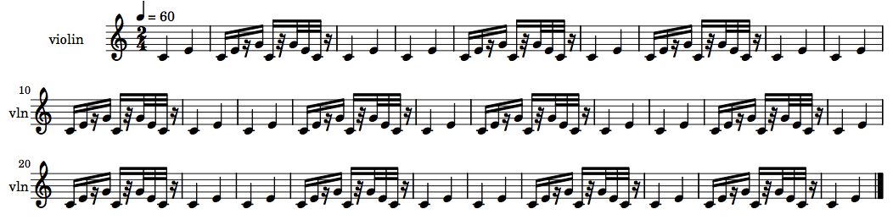
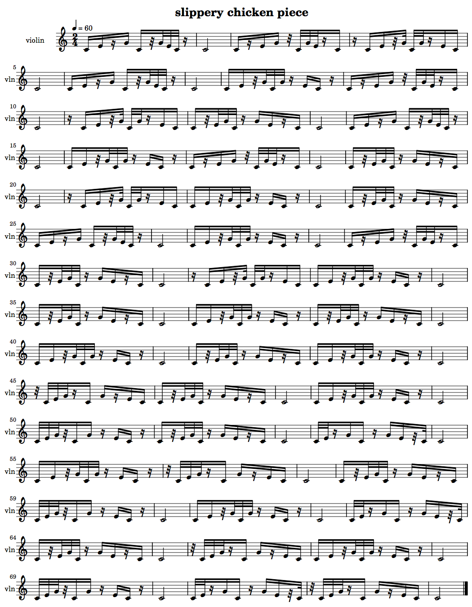

L-systems
+ Associated example files
NB: An exercise relating to the material covered in this tutorial can be found on the Exercises page.
L-systems, or Lindenmayer Systems, are recursive formulas used to model self-similar objects or processes. They were developed in 1968 by Hungarian botanist Aristid Lindenmayer (1925–1989) to model growth processes in plants, but have since been used in many other fields, including in the generation of fractal images.
slippery chicken has a class and methods available for using
L-systems to generate self-similar lists, which can in turn be used to
govern any of the musical data which a slippery-chicken
object may contain. For an example of the use of L-systems in
a slippery chicken composition, see the tutorial
on Tempus Perfectum.
+ L-system basics
L-systems consist of three basic components: a list of individual symbols that will be used to make strings; a list of rules for how to expand each symbol into a longer string of symbols; and an initial state, or axiom, with which the process is to begin.
A loop is then used to apply the rules to each symbol of the new, longer strings at each pass, returning an even longer string each time.
A simple example
As a common first example, the following L-system uses the symbols A and B. Its rules state that at each pass, every A in the current string is to be converted to AB, and every B is to be converted to A. The whole process will start with an initial axiom of A.
Symbols: A, B
Rules: A => AB, B => A
Axiom: A
Produces:
pass 0 : A
pass 1 : AB
pass 2 : ABA
pass 3 : ABAAB
pass 4 : ABAABABA
pass 5 : ABAABABAABAAB
pass 6 : ABAABABAABAABABAABABA
pass 7 : ABAABABAABAABABAABABAABAABABAABAAB
Or, to break the above example down into its routes [1]:
A
_|_
A B
_| |
A B A
_| | |_
A B A A B
_| | |_ |_ \
A B A A B A B A
[etc.]
Notes
[1] Adapted from the University of Hamburg Biology webpages
+ L-systems in graphics and fractals
Turtle Graphics
The use of L-systems to produce fractal graphics is often combined with an approach to automated drawing called Turtle Graphics, which were originally a feature of the Logo programming language (a dialect of Lisp).
Using Turtle Graphics, the symbols of an L-system's resulting string are converted into drawing instructions, the most basic of which are "draw a line forward", or "draw nothing". In conjunction with L-systems, Turtle Graphics also provide for the specification of constant symbols, which don't change the string at all, but tell the program, for example, to "change the direction of the line by an angle of n degrees", or to "begin a branch", etc.
Sierpinski Triangle
A simple example of using an L-system to control Turtle Graphics can be seen in a brief set of symbols and rules that produce a "Sierpinski Triangle". The L-system uses the symbols A and B. Both of these are translated into instructions to "draw a line forward". The system also includes the constants + and -, which don't result in anything being drawn, but instead instruct the graphics program to turn left or right by the specified angle before drawing the next line. The rules are that every A becomes B-A-B, and every B becomes A+B+A. The axiom is A.
Symbols: A, B
both mean "draw forward"
Constants: +, -
+ means "turn left by angle"
- means "turn right by angle"
Rules:
A => B-A-B
B => A+B+A
Axiom: A
An angle of 60 degrees produces the following image after 6 iterations:
|  |
Fractal plant
A second example of L-systems and graphics produces an image that resembles a plant. It uses the symbols F and X, which translate into the instructions to "draw a line forward" in the one case and to "draw nothing" in the other. As constants, it again uses the + and - symbols to change the angle, and additionally includes the symbols [ and ], which mean to "create a node and begin a branch", and "end the branch and return to the most recent node". Its rules are that every X becomes F-[[X]+X]+F[+FX]-X, and every F becomes FF. It starts with an axiom of X.
Symbols: F, X
F means "draw forward"
X means "draw nothing"
Constants: -, +, [, ]
- means "turn left by angle"
+ means "turn right by angle"
[ means "create node and begin branch"
] means "end branch and return to most recent node"
Rules:
X => F-[[X]+X]+F[+FX]-X
F => FF
Axiom: X
An angle of 25 degrees produces the following image after 6 iterations:
|  |
+ L-systems in slippery chicken
In slippery chicken, L-systems can be used to generate self-similar lists based on a collection of items, rules, and an axiom. The slippery chicken implementation of L-systems does not include constants (i.e. no branching).
slippery chicken's L-system class and methods generate a
sequence of key references from a set of specified rules and use
these to retrieve data from a list of key-data pairs
(assoc-list
object). Extensions to the algorithm allow the user to implement
Fibonacci-based transitions between the data items, or to generate
linear lists from the data without using L-system rules.
The l-for-lookup object
At the core of slippery chicken's L-system implementation
is the l-for-lookup object. This object takes an ID, a
list of key-data pairs (each element of the data list must also be a
list), and a list of rules created from the keys of the list of
elements. Both the keys and the data of the rules must consist of the
keys from the list of elements.
For example, the following creates an l-for-lookup
object based on the rules A=>B and B=>A:
(make-l-for-lookup 'l-sys
'((1 ((a))) ; elements
(2 ((b))))
'((1 (1 2)) ; rules
(2 (1))))
A number of methods are then available to create lists based on the
elements and rules specified in the l-for-lookup
object.
get-l-sequence
The get-l-sequence method operates by collecting a list
of keys, without using those keys as look-up references and therefore
not converting the list of keys into a list of corresponding data
elements. It takes as its arguments the l-for-lookup
object, an axiom (the starting key), and an integer that indicates
the length of the resulting list.
(let* ((lfl (make-l-for-lookup 'l-sys
'((1 ((a)))
(2 ((b))))
'((1 (1 2)) (2 (1))))))
(get-l-sequence lfl 1 29))
=> (1 2 1 1 2 1 2 1 1 2 1 1 2 1 2 1 1 2 1 2 1 1 2 1 1 2 1 2 1)
The l-for-lookup object to be accessed by this method
can thus be made without specifying a list of elements (by
using NIL instead).
(let* ((lfl (make-l-for-lookup 'l-sys
nil
'((1 (1 2)) (2 (1))))))
(get-l-sequence lfl 1 29))
=> (1 2 1 1 2 1 2 1 1 2 1 1 2 1 2 1 1 2 1 2 1 1 2 1 1 2 1 2 1)
A musical implementation of this object and method may look like the following:
(let* ((num-seqs 29)
(lfl (make-l-for-lookup 'l-sys
nil
'((1 (1 2)) (2 (1)))))
(rs-map (get-l-sequence lfl 1 num-seqs))
(mini
(make-slippery-chicken
'+mini+
:ensemble '(((vn (violin :midi-channel 1))))
:set-palette '((1 ((c4 e4 g4))))
:set-map `((1 ,(loop repeat num-seqs collect 1)))
:rthm-seq-palette '((1 ((((2 4) q q))
:pitch-seq-palette ((1 2))))
(2 ((((2 4) - s s (s) s - - s (32) 32 32 32 - (s)))
:pitch-seq-palette ((1 2 3 1 3 2 1)))))
:rthm-seq-map `((1 ((vn ,rs-map)))))))
(midi-play mini)
(cmn-display mini)
(write-lp-data-for-all mini))
|  |
do-simple-lookup
The do-simple-lookup method takes as its arguments
an l-for-lookup object, an axiom (which must be one of
the keys from the list of elements), and an integer to specify the
length of the list to be returned.
The method then performs L-system iterations based on the rules of
the specified l-for-lookup object, collecting the keys
specified in the rules until it returns a list whose length is equal
to or greater than the length specified. (If the list is longer, it
is truncated.) It then uses the list of keys to look up the
associated data, essentially converting the list of keys into a list
of the corresponding data elements.
(let* ((lfl (make-l-for-lookup 'l-sys
'((1 ((a)))
(2 ((b))))
'((1 (1 2)) (2 (1))))))
(do-simple-lookup lfl 1 29))
=>
((A) (B) (A) (A) (B) (A) (B) (A) (A) (B) (A) (A) (B) (A) (B) (A) (A) (B)
(A) (B) (A) (A) (B) (A) (A) (B) (A) (B) (A))
A very handy utility function in slippery chicken is
the flatten function, which makes a "flat" list out of
any list of sub-lists. Using that function with the above example,
the method returns a list of just the data:
(let* ((lfl (make-l-for-lookup 'l-sys
'((1 ((a)))
(2 ((b))))
'((1 (1 2)) (2 (1))))))
(flatten (do-simple-lookup lfl 1 29)))
=> (A B A A B A B A A B A A B A B A A B A B A A B A A B A B A)
A possible musical implementation of this method may look like the following:
(let* ((num-seqs 29)
(lfl (make-l-for-lookup 'l-sys
'((1 ((a)))
(2 ((b))))
'((1 (1 2)) (2 (1)))))
(rs-map (flatten (do-simple-lookup lfl 1 29)))
(mini
(make-slippery-chicken
'+mini+
:ensemble '(((vn (violin :midi-channel 1))))
:set-palette '((1 ((c4 e4 g4))))
:set-map `((1 ,(loop repeat num-seqs collect 1)))
:rthm-seq-palette '((a ((((2 4) q q))
:pitch-seq-palette ((1 2))))
(b ((((2 4) - s s (s) s - - s (32) 32 32 32 - (s)))
:pitch-seq-palette ((1 2 3 1 3 2 1)))))
:rthm-seq-map `((1 ((vn ,rs-map)))))))
(midi-play mini)
(cmn-display mini)
(write-lp-data-for-all mini))
|  |
+ Combining L-systems and Fibonacci-based transitions
slippery chicken provides an extension to the L-system
approach through a combination of L-system look-ups with
Fibonacci-based transitions (see the manual page
on Fibonacci functions for more
detail). This is done using the do-lookup method.
In order for the Fibonacci transitions of the do-lookup
method to be evident in the resulting list, the data of at least one
of the key-data pairs must contain at least two sub-lists. In the
final list returned by the method, the instances of the keys for
elements with more than one sub-list will be replaced by gradual
transitions through each of the sub-lists.
For example, the item with key 1 in the list of
elements from the following l-for-lookup object has the
sub-lists (a) and (c). In the list produced
by do-lookup, the first sub-list at key 1
(a) will gradually be replaced by the second,
(c).
(let* ((lfl (make-l-for-lookup 'l-sys-a
'((1 ((a) (c)))
(2 ((b))))
'((1 (1 2)) (2 (1))))))
(do-lookup lfl 1 73))
=>
(A B A A B A B A A B A C B A B A A B A B C A B A A B A B C A B A C B A B A
C B A B C A B C C B A B C A B C B A C B C A B C B C A B C C B C B C C B)
This is an example with multiple lists in each element, each of which in turn contains multiple items to transition over:
(let* ((lfl
(make-l-for-lookup 'l-sys-a
'((1 ((a b c) (1 2 3) (ant bird cat) (10 20 30)))
(2 ((two) (999))))
'((1 (1 2)) (2 (1))))))
(do-lookup lfl 1 73))
=>
(A TWO B 1 TWO C TWO 2 A TWO 3 B 999 1 TWO C 2 TWO A 999 3 1 TWO 2 3 TWO 1
999 ANT 2 TWO BIRD 3 999 CAT TWO 1 ANT 999 2 TWO BIRD 3 999 CAT ANT TWO
BIRD 999 CAT ANT TWO 10 999 BIRD 20 999 CAT 30 TWO ANT 999 10 BIRD 999 20
CAT 999 30 999 10 20 999)
A musical usage of this method may look as follows:
(let* ((num-seqs 73)
(lfl (make-l-for-lookup 'l-sys-a
'((1 ((a b c) (d e) (f g h)))
(2 ((i))))
'((1 (1 2)) (2 (1)))))
(rs-map (do-lookup lfl 1 num-seqs))
(mini
(make-slippery-chicken
'+mini+
:ensemble '(((vn (violin :midi-channel 1))))
:set-palette '((1 ((c4 e4 g4))))
:set-map `((1 ,(loop repeat num-seqs collect 1)))
:rthm-seq-palette '((a ((((2 4) - s s (s) s - - s (32) 32 32 32 - (s)))
:pitch-seq-palette ((1 2 3 1 3 2 1))))
(b ((((2 4) - s (s) s s - (32) - 32 32 32 (s) s -))
:pitch-seq-palette ((1 2 3 1 3 2 1))))
(c ((((2 4) (s) - s s (32) 32 - - 32 32 (s) s s -))
:pitch-seq-palette ((1 2 3 1 3 2 1))))
(d ((((2 4) - s s (32) 32 32 32 - (s) - s s - (s)))
:pitch-seq-palette ((1 2 3 1 3 2 1))))
(e ((((2 4) - s (32) 32 32 32 - (s) - s s (s) s -))
:pitch-seq-palette ((1 2 3 1 3 2 1))))
(f ((((2 4) (32) - 32 32 32 (s) s - - s (s) s s -))
:pitch-seq-palette ((1 2 3 1 3 2 1))))
(g ((((2 4) - 32 32 32 (32) s s - (s) - s s - (s)))
:pitch-seq-palette ((1 2 3 1 3 2 1))))
(h ((((2 4) - 32 32 (s) s s - (s) - s s (32) 32 -))
:pitch-seq-palette ((1 2 3 1 3 2 1))))
(i ((((2 4) h))
:pitch-seq-palette ((1)))))
:rthm-seq-map `((1 ((vn ,rs-map)))))))
(midi-play mini)
(cmn-display mini)
(write-lp-data-for-all mini))
|  |
+ Non-L-system use of L-system object data
slippery chicken also provides an option for using the rules
of an l-for-lookup object without using L-system
data. If this option is chosen, the
corresponding l-for-lookup object can be made without
any data, by substituting the data with NIL.
The get-linear-sequence method creates a list from the
rules of an l-for-lookup object's key-data pairs. It does
so by collecting the next element from the given key-data
pair each time that pair is accessed. When the last element of that
pair has been retrieved, the method returns to the head of that
pair's data list.
The method then uses the element collected as the key for the next collection. All of the elements must therefore consist of only the keys from the list of key-data pairs.
(let* ((lfl (make-l-for-lookup 'lfl-test
nil
'((1 (2 3))
(2 (3 1 2))
(3 (1))))))
(get-linear-sequence lfl 1 23))
=> (1 2 3 1 3 1 2 1 3 1 2 2 3 1 3 1 2 1 3 1 2 2 3)
This method can be very useful for algorithmically generating chord sequences within a composition, as the following example demonstrates:
(let* ((num-seqs 23)
(lfl (make-l-for-lookup 'lfl-test
nil
'((1 (2 3))
(2 (3 1 2))
(3 (1)))))
(s-map (get-linear-sequence lfl 1 num-seqs))
(mini
(make-slippery-chicken
'+mini+
:ensemble '(((vn (violin :midi-channel 1))))
:set-palette '((1 ((c4 e4 g4)))
(2 ((c4 f4 a4)))
(3 ((d4 g4 b4))))
:set-map `((1 ,s-map))
:rthm-seq-palette '((1 ((((2 4) q e (s) s))
:pitch-seq-palette ((1 2 3)))))
:rthm-seq-map `((1 ((vn ,(loop repeat num-seqs collect 1))))))))
(midi-play mini)
(cmn-display mini)
(write-lp-data-for-all mini))
 |
Another example of such use of the l-for-lookup class
can be found in the manual page Tonal composition
with slippery chicken.